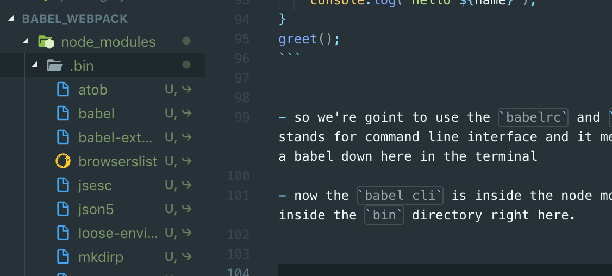
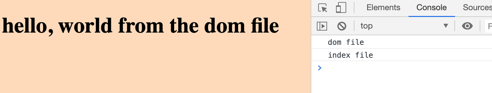
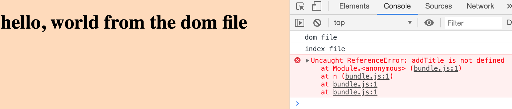
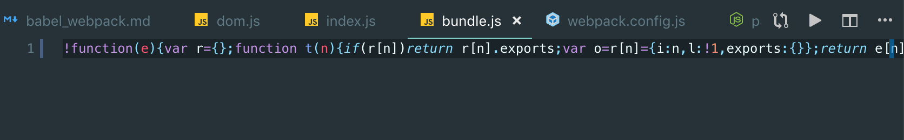
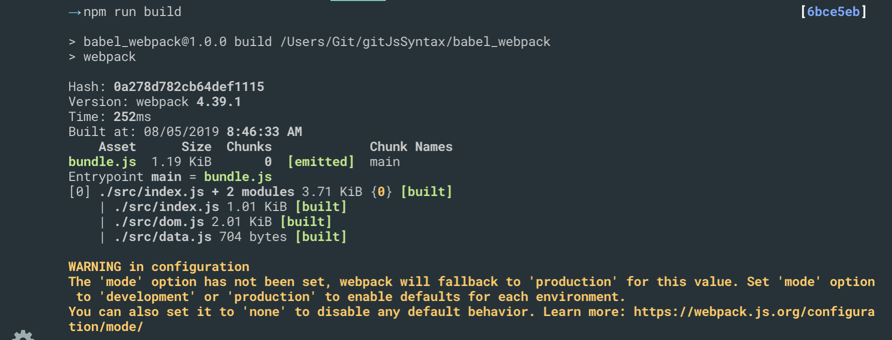
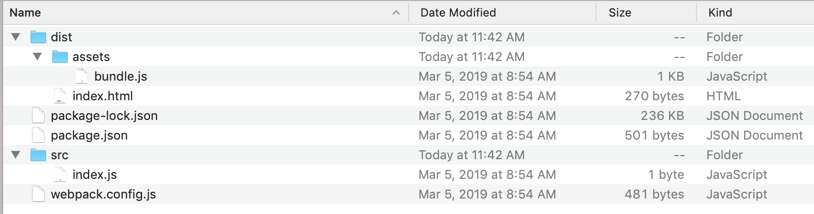
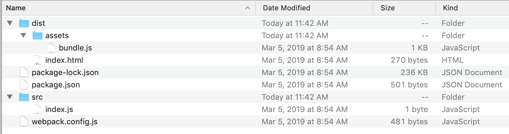

1. babel webpack
Installing Node.js & babel
→ node -v [c0c5373]
//v12.5.0
npm init
Press ^C at any time to quit.
package name: (babel_webpack)
version: (1.0.0)
description:
entry point: (index.js)
test command:
git repository:
keywords:
author:
license: (ISC)
About to write to /Users/Git/gitJsSyntax/babel_webpack/package.json:
{
"name": "babel_webpack",
"version": "1.0.0",
"description": "",
"main": "index.js",
"scripts": {
"test": "echo \"Error: no test specified\" && exit 1"
},
"author": "",
"license": "ISC"
}
Is this OK? (yes) y
- install
babel/core balel/cli
→npm install @babel/core @babel/cli --sav-dev
- in order to convert
ES6toES5, we need to install one more thing.
→ npm install @babel/preset-env --save-dev
- so once we have htat installed we have to define the
presetin a new file inside our project directory called.babelrc
.babelrc
{
"presets":["@babel/preset-env"]
}
Using Babel
Install Node.js (and npm) on our computer
Use
npm initto create a package.json file in the project directoryUse npm to install
babel/core & babel/clipackagesInstall the babel preset (env) & register it in
.babelrcnow inside
package.jsonand.babelrc
{
"name": "babel_webpack",
"version": "1.0.0",
"description": "",
"main": "index.js",
"scripts": {
"test": "echo \"Error: no test specified\" && exit 1"
},
"author": "",
"license": "ISC",
"dependencies": {
"@babel/cli": "^7.5.5",
"@babel/core": "^7.5.5"
},
"devDependencies": {
"@babel/preset-env": "^7.5.5"
}
}
{
"presets":["@babel/preset-env"]
}
- now we create a before.js file
const greet = (name) => { console.log(`hello ${name}`); } greet();
so we're goint to use the
babelrcandclijust stands for command line interface and it means we can run a babel down here in the terminalnow the
babel cliis inside the node modules folder inside thebindirectory right here.

→ node_modules/.bin/babel before.js -o after.js
- inside after.js
"use strict";
var greet = function greet(name) {
console.log("hello ".concat(name));
};
greet();
node_modules
This is where all of the third party package code lives, so if we install a package it lives inside this
node modulesfolderIf I was to ever send my project to another developer or upload it to github then I wouldn't send or upload this node modules folder every other file or folder I would send or upload but not the node modules because it's so huge it contains a lot of code in it.
So if I don't send or upload this folder(node_modules) with my project how will another developer run this project correctly without that folder.
well, they can't They need to get that folder back and reinstall all of those things. But that's simple thanks to our
package.jsonfile down hereRemember the
package.jsonfile keeps track of all the packages that we install for this project.So when a developer gets this project without the
node_modulesfolder they can still see inside thepackage.jsonfile what packages need to be installed right here.Now they don't have to install each one individually they can do them altogether by just using one command. And that is
npm installand this reinstall is all the packages insidepackage.jsonand create a known modules folder for them to get.
- Remember: If you were to download the files from github repository then
you won't see the
node_modulesfolder, and you would have to runnpm installto install all of these packages right there and that will create thenode_modulesfolder for you.
NPM Script & Watching Files
- we create all required folders and files
- now we convert the older code to the new .js file
→ node_modules/.bin/babel src/index.js -o dist/assets/bundle.js
//index.js
const greet = name => {
console.log(`hello ${name}`);
}
greet('mario');
greet('luigi');
greet('link');
//bundle.js
"use strict";
var greet = function greet(name) {
console.log("hello ".concat(name));
};
greet('mario');
greet('luigi');
greet('link');
but the problem is that there is a lot to write every time we want to do this conversion because we might make changes to this code several times and we have to write this out every time.
so I'm goint to copy the command line instruction, and we're going to go over to
package.json, and you'll notice we have this script section in package.
package.json
{
"name": "babel_webpack",
"version": "1.0.0",
"description": "",
"main": "index.js",
"scripts": {
"babel": "node_modules/.bin/babel src/index.js -o dist/assets/bundle.js"
},
"author": "",
"license": "ISC",
"dependencies": {
"@babel/cli": "^7.5.5",
"@babel/core": "^7.5.5"
},
"devDependencies": {
"@babel/preset-env": "^7.5.5"
}
}
- so we altering the babel
"babel": "node_modules/.bin/babel src/index.js -o dist/assets/bundle.js"
- now we can run
npm run babel
→ npm run babel [c0c5373]
> babel_webpack@1.0.0 babel /Users/Git/gitJsSyntax/babel_webpack
> babel src/index.js -o dist/assets/bundle.js
now we have altered the
bundle.js's contentwatch flag, inside package.json:
"babel": "node_modules/.bin/babel src/index.js -w -o dist/assets/bundle.js"
- now after we alter .js file, we just need to save the .js file. It will automactially change the codes
Webpack
Webpack is a
module bundlerWorks well with
babelLocal development server
setting up a Webpack file
create a
webpack.config.jsnow this is not javascript that can run normally in a browser
it's javascript that can only run directly on a computer with the help of node.js
it's going to be running in the computer to compile all our code together bundle it all together and spit out this bundle and this bundle is ultimately the only thing that is going to be running inside a browser
webpack.config.js
module.exports = {};
so module exports basically means that we're going to export a Webpack configuration object right here
inside this object we need to specify two main properties:
we need to set an
entrypropertyoutputproperty
webpack.config.js
const path = require('path');
module.exports = {
entry: './src/index.js',
output: {
path: path.resolve(__dirname, 'dist/assets'),
filename: 'bundle.js'
}
};
Webpack CLI
→ npm install webpack webpack-cli --save-dev
- we have installed webpack
run:
→node_modules/.bin/webpack
- updating package.json:
{
"name": "babel_webpack",
"version": "1.0.0",
"description": "",
"main": "index.js",
"scripts": {
"babel": "node_modules/.bin/babel src/index.js -w -o dist/assets/bundle.js",
"webpack": "node_modules/.bin/webpack"
},
"author": "",
"license": "ISC",
"dependencies": {
"@babel/cli": "^7.5.5",
"@babel/core": "^7.5.5"
},
"devDependencies": {
"@babel/preset-env": "^7.5.5",
"webpack": "^4.39.1",
"webpack-cli": "^3.3.6"
}
}
→ npm run webpack
→ npm run webpack [dcf7440]
> babel_webpack@1.0.0 webpack /Users/Git/gitJsSyntax/babel_webpack
> webpack
bundle.js
!function(e){var t={};function n(r){if(t[r])return t[r].exports;var o=t[r]={i:r,l:!1,exports:{}};return e[r].call(o.exports,o,o.exports,n),o.l=!0,o.exports}n.m=e,n.c=t,n.d=function(e,t,r){n.o(e,t)||Object.defineProperty(e,t,{enumerable:!0,get:r})},n.r=function(e){"undefined"!=typeof Symbol&&Symbol.toStringTag&&Object.defineProperty(e,Symbol.toStringTag,{value:"Module"}),Object.defineProperty(e,"__esModule",{value:!0})},n.t=function(e,t){if(1&t&&(e=n(e)),8&t)return e;if(4&t&&"object"==typeof e&&e&&e.__esModule)return e;var r=Object.create(null);if(n.r(r),Object.defineProperty(r,"default",{enumerable:!0,value:e}),2&t&&"string"!=typeof e)for(var o in e)n.d(r,o,function(t){return e[t]}.bind(null,o));return r},n.n=function(e){var t=e&&e.__esModule?function(){return e.default}:function(){return e};return n.d(t,"a",t),t},n.o=function(e,t){return Object.prototype.hasOwnProperty.call(e,t)},n.p="",n(n.s=0)}([function(e,t){const n=e=>{console.log(`hello ${e}`)};n("mario"),n("luigi"),n("link"),n("link")}]);
Introduction to Modules`
we temporarily clear
index.js's contentcreate a
dom.js
console.log('dom file');
const body = document.querySelector('body');
const styleBody = () => {
body.style.background = 'peachpuff';
};
const addTitle = (text) => {
const title = document.createElement('h1');
title.textContent = text;
body.appendChild(title)
};
styleBody();
addTitle('hello, world from the dom file');
index.js
//Introduction to Modules
import './dom';
console.log('index file');
- run
npm run webpack

what if we call the
addTitle()fromdom.jsrun →
npm run webpack

we can see that there is an error:
addTitleis not definedso when we use modules to
importa file like this it runs the code inside that file but it doesn't automatically share any variables or functions with the file that import it.we couldn't automactically access any of the variables or function that we define inside the Dom file
so in order for this to work we have to manually export functions that we want to use inside index from this file.
well we can do that by putting an export keyword in front of the things we want to export.
dom.js
//Modules
console.log('dom file');
const body = document.querySelector('body');
export const styleBody = () => {
body.style.background = 'peachpuff';
};
export const addTitle = (text) => {
const title = document.createElement('h1');
title.textContent = text;
body.appendChild(title)
};
styleBody();
addTitle('hello, world from the dom file');
now if I save it if I come over here we have to explicitly import those things from this file as well.
so inside index.js
import { styleBody, addTitle } from './dom';
console.log('index file');
addTitle('test')
styleBody();
updating dom.js
//Modules
console.log('dom file');
const body = document.querySelector('body');
export const styleBody = () => {
body.style.background = 'peachpuff';
};
export const addTitle = (text) => {
const title = document.createElement('h1');
title.textContent = text;
body.appendChild(title)
};
- so now if I
npm run webpackagain
now we have added a titile "test"
now we can export more than just functions from a file we can export any kind of data like arrays object strings classes
- let's now try exporting a string:
//Modules
console.log('dom file');
const body = document.querySelector('body');
export const styleBody = () => {
body.style.background = 'peachpuff';
};
export const addTitle = (text) => {
const title = document.createElement('h1');
title.textContent = text;
body.appendChild(title)
};
export const contact = 'mario@thenetninja.co.uk';
import { styleBody, addTitle, contact } from './dom';
console.log('index file');
addTitle('test')
styleBody();
console.log(contact);
→ npm run webpack
//Deafult exports
console.log('dom file');
const body = document.querySelector('body');
const styleBody = () => {
body.style.background = 'peachpuff';
};
const addTitle = (text) => {
const title = document.createElement('h1');
title.textContent = text;
body.appendChild(title)
};
const contact = 'mario@thenetninja.co.uk';
export { styleBody, addTitle, contact }
→ npm run webpack
- then, the result is the same
default exports
- create a
data.jsinside src folder
const users = [
{ name: 'mario', premium: true },
{ name: 'luigi', premium: false },
{ name: 'yoshi', premium: true },
{ name: 'toad', premium: true },
{ name: 'peach', premium: false }
];
imagine now I want to export this thing from this file.
Now previously when we've been exporting things we've been exporting multiple different things.
we'd make something a default export
//Default Exports
import { styleBody, addTitle, contact } from './dom';
import users from './data';
console.log(users);
- updating data.js
const users = [
{ name: 'mario', premium: true },
{ name: 'luigi', premium: false },
{ name: 'yoshi', premium: true },
{ name: 'toad', premium: true },
{ name: 'peach', premium: false }
];
export const getPremUser = (users) => {
return users.filter(users => users.premium);
}
export default users;
dom.js
//Deafult exports
console.log('dom file');
const body = document.querySelector('body');
const styleBody = () => {
body.style.background = 'peachpuff';
};
const addTitle = (text) => {
const title = document.createElement('h1');
title.textContent = text;
body.appendChild(title)
};
const contact = 'mario@thenetninja.co.uk';
export { styleBody, addTitle, contact }
index.js
//Default Exports
import { styleBody, addTitle, contact } from './dom';
import users, { getPremUser } from './data';
const premUsers = getPremUser(users);
console.log(users, premUsers);
→ npm run webpack
- Now let's have a look at the alternative way of exporting and things where we define it all at the bottom.
altering data.js
const users = [
{ name: 'mario', premium: true },
{ name: 'luigi', premium: false },
{ name: 'yoshi', premium: true },
{ name: 'toad', premium: true },
{ name: 'peach', premium: false }
];
const getPremUser = (users) => {
return users.filter(users => users.premium);
}
export { getPremUser, users as default }
- the same output
Watching for Changes
now we can use modules inside our project which is going to really help us to structure our code a bit better in the future.
There's a small problem every time we make a change to a file inside our source folder at the minute we have to rerun the webpack command to rebound all the javascript.
It would be nice if we could instead have webpack automatically rerun every time we make a change to a file and save it much like we did with babel before and we can do this.
All we need to do is come to package.json and where we have our web script come to the end.
alter package.json
{
"name": "babel_webpack",
"version": "1.0.0",
"description": "",
"main": "index.js",
"scripts": {
"babel": "node_modules/.bin/babel src/index.js -w -o dist/assets/bundle.js",
"webpack": "node_modules/.bin/webpack -w"
},
"author": "",
"license": "ISC",
"dependencies": {
"@babel/cli": "^7.5.5",
"@babel/core": "^7.5.5"
},
"devDependencies": {
"@babel/preset-env": "^7.5.5",
"webpack": "^4.39.1",
"webpack-cli": "^3.3.6"
}
}
- now we run
→ npm run webpack
> babel_webpack@1.0.0 webpack /Users/Git/gitJsSyntax/babel_webpack
> webpack -w
- now we optionally adding a statement into index.js
console.log('test');
- if you want to cancel this
control + c on terminal
Webpack Dev Server
→ npm install webpack-dev-server@3.2.1
next step, we need to do is configure that webpack dev server inside the webpack.config.js
to do that, we need another property, which is called
dev serverlike so and this is an object.
webpack.config.js
const path = require('path');
module.exports = {
entry: './src/index.js',
output: {
path: path.resolve(__dirname, 'dist/assets'),
filename: 'bundle.js'
},
devServer: {
contentBase: path.resolve(__dirname, 'dist'),
publicPath: '/assets/'
}
};
package.json
{
"name": "babel_webpack",
"version": "1.0.0",
"description": "",
"main": "index.js",
"scripts": {
"babel": "node_modules/.bin/babel src/index.js -w -o dist/assets/bundle.js",
"webpack": "node_modules/.bin/webpack -w",
"serve": "webpack-dev-server"
},
sometimes we need to update
webpack-dev-serverrun this instruction:
→ npm install webpack-dev-server
- and it will update itself to the newest version and it should work just fine
now, we clear bundle.js's content
go to index.js, say test 3
if we go back to
bundle.js, we still see nothing. All it's done is created a virtual file which is erving up from this path.we can still see the same results and we can still see all of this logged to the console because it's serving that virtual file that virtual javascript file but we don't see it inside
bundle.js, there is no physical manifestation of it.Now this is great for development because it speeds things up for us every time we make a save.
Production & Development Modes
take off the
-wfile because we're only typically going to build this once when we want to buildwe don't need to watch files anymore and rerun this when we're making changes because tthat's what the development script is for.
altering package.json
{
"name": "babel_webpack",
"version": "1.0.0",
"description": "",
"main": "index.js",
"scripts": {
"build": "node_modules/.bin/webpack",
"serve": "webpack-dev-server"
},
"author": "",
"license": "ISC",
"dependencies": {
"@babel/cli": "^7.5.5",
"@babel/core": "^7.5.5",
"webpack-dev-server": "^3.7.2"
},
"devDependencies": {
"@babel/preset-env": "^7.5.5",
"webpack": "^4.39.1",
"webpack-cli": "^3.3.6"
}
}
→ npm run build
- now we can see the
bundle.js's content:
 
- the problem is that we see the yellow warning
altering package.json
"scripts": {
"build": "node_modules/.bin/webpack --mode production",
"serve": "webpack-dev-server --mode development"
},

- we don't get that big yellow warning anymore.
Babel & Webpack Together
→ npm install babel-loader --save -dev
we're going to create a module property
regular expression:
rules: [{
test: /\.js$/
}]
//this regualr expression is testing for any file that ends in .js
// $ means the end
// dot(.) means any character by default
// " \.js$ " this whole expression means look for files which end in .js and that's what we want to run through the babel loader
module: {
rules: [{
test: /\.js$/,
exclude: /node_modules/
}]
}
//imagine we import some kind of package from node modules then we don't want to run that through the babel loader because that's code that someone else has written that we've just installed
//so we don't want to do any additional processing on their code. We just want to do it on our code.
//we don't want to run anything from there through the babel loader
//updating
module: {
rules: [{
test: /\.js$/,
exclude: /node_modules/,
use: {
loader: 'babel-loader',
options: {
presets: ['@babel/preset-env']
}
}
}]
}
// now we're looking for any .js file that's not coming from node_modules,
Webpack Boilerplate
Now you might be thinking that this is an awful lot of work to do every time you create a new project which uses javascript.
First of all we don't always have to use web for every single one of our projects.
secondly when we do use this workflow and we do use Webpack we're not going to need to rewrite our whole configuration and our whole project structure from scratch.
Typically what I do is create a boilerplate(样板) web project
Then I upload that to Github once then whenever I want to create a new project
What I do is go to download that boilerplate and get up or running right away with that boilerplate.
 

so now everything is setting up ready for us, however, we don't see a
node_modulesfolder over here and we do need those package listed package.jsonRemember: we don't have to install each one of these manually
we just need to type
npm install
- then the only we need to run
npm run serve
finally, we can rewrite
index.jswe can test our project by overwrite index.js to check!